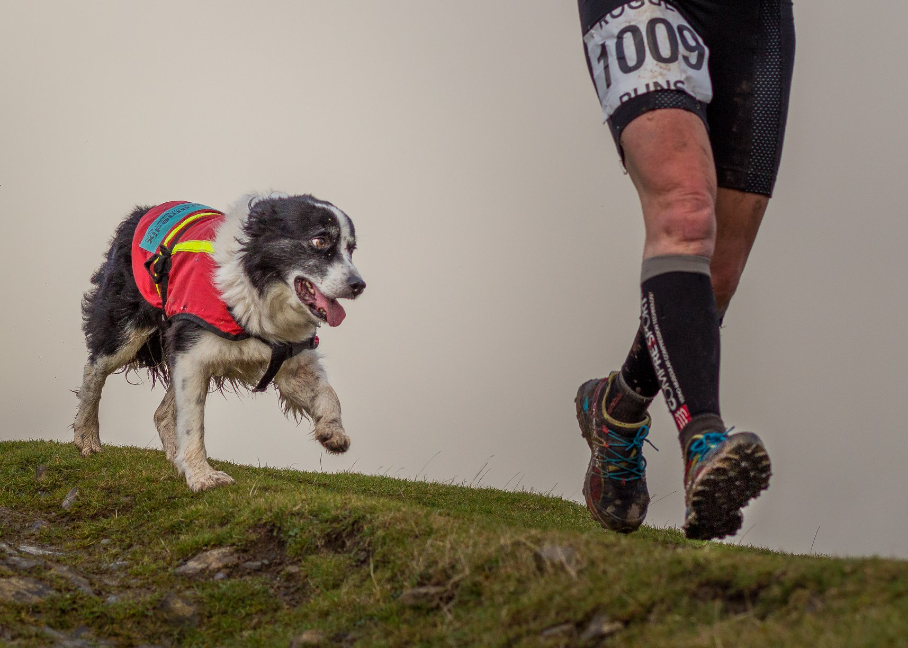
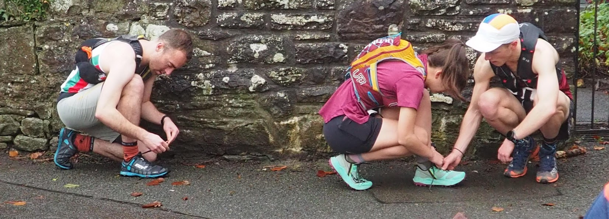
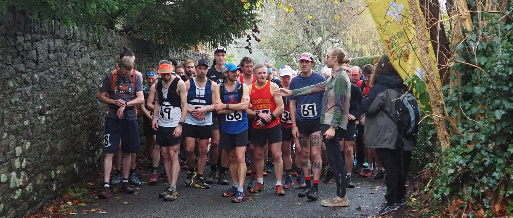

Distance / Pellter - 5.7km Elevation gain / Uchder - 478m Date / Dyddiad - 29th November 2025 Time / Amser - 12pm start
10:30 registration Venue / Lleoliad - Llanfoist Village Hall Address / Cyfeiriad - Church Lane
Abergavenny
NP7 9LP \\\nightfall.apprehend.rolled
Croeso i’r Blorenge, a great (but also tough) beginner friendly fell race. This race is a real test on the thighs as you climb 478m in the space of the first 2km. The route is easily navigable and consists of a very steep uphill, a gradually sloping upward path to the trig point, and then a hurtle down the mountain.
On the day there will be a kit swap event. If you have old kit which is still usable please bring it along and you may be able to find a pre-loved item for yourself or to gift
Blwyddyn dwetha, dechreuodd 98 o redwyr ac gorffen nhw ras fell y Blorenge. Oedrannau o 16 i 80 oed. Roedd rhedwyr o bob gallu gwahanol yn cymryd rhan - rhai profiadol a rhai newydd. Roedd hi'n wlyb ac yn niwlog, ond gorffennodd pawb y ras yn ddiogel.

Dw i'n credu bod pawb wedi cael amser gwych - rhedeg, cerdded, sgwrsio, bwyta - jest dod at ei gilydd. Roedd y gymuned yn anhygoel, pobl leol a rhedwyr o bell yn rhannu straeon ac yn helpu ei gilydd. Roedd bwyd da, cwmni da, a chroeso cynnes i bawb.
Cymuned Community


Amgylchedd Environment
The spring and summer of 2025 have brought devastating wildfires to the heart of the Bannau Brycheiniog, with flames tearing across beloved landscapes from the Blorenge to Sugar Loaf, and a particularly stubborn peat fire at Clydach Dingle that burnt relentlessly for over a month. These fires have consumed thousands of acres, releasing carbon stored for centuries while destroying fragile mountain ecosystems that take decades to recover.
For those who cherish these ancient hills – who know the joy of running the Blorenge, watching red kites soar above heathered slopes, or finding solace in these timeless peaks – the sight of smoke rising from our mountains should serve as both heartbreak and call to action. Our responsibility extends beyond simply loving these places; we must actively protect them by reporting suspicious activity, following fire safety guidelines, supporting conservation efforts, and advocating for the resources needed to prevent and fight these devastating blazes that threaten the very soul of our Welsh landscape.